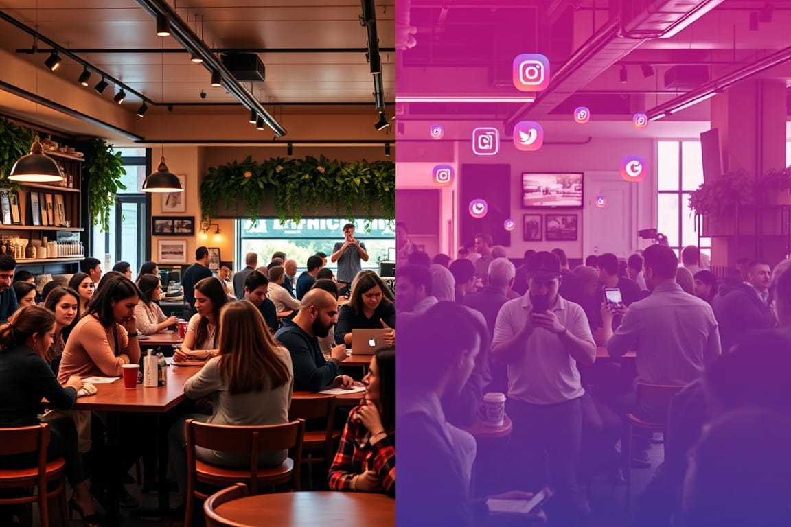
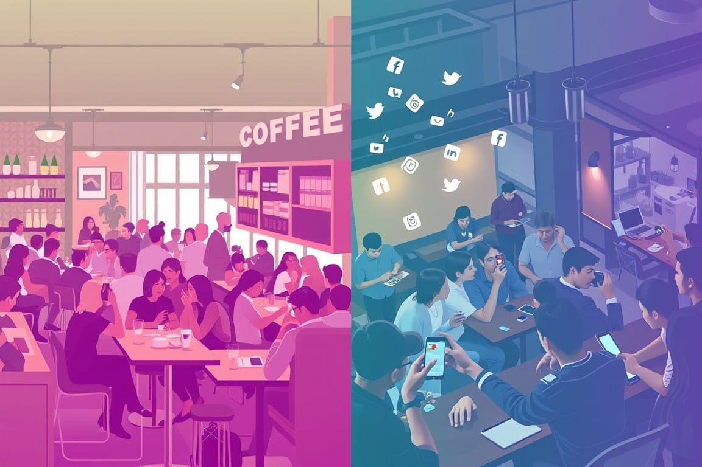

The Creator Economy: From Experience to Creation
From latte art to livestreams, the Creator Economy has turned baristas into brands. But as we trade experiences for followers, are we brewing a potent blend of opportunity and anxiety? Grab your favorite mug and let's espresso ourselves on this caffeinated journey through digital creation.
"In the Creator Economy, we've traded lattes for likes, experiences for engagement. We're all baristas now, brewing content instead of coffee, but the question remains: are we savoring the moment, or just chasing the next dopamine hit?"
In the early 2000s, a typical coffee shop scene played out differently. You'd order a latte, and the barista would carefully craft your drink, complete with a delicate foam design on top. You might snap a photo with your flip phone, but there was no Instagram to share it on. Fast forward to today, and that same barista might be livestreaming their latte art techniques to thousands of followers, selling online courses, and partnering with coffee brands. This transformation exemplifies the shift to the Creator Economy.
Experience EconomyImmersive event industry transformationIn the Lexicon →The shift from the Experience Economy to the Creator Economy represents a seismic change in how we produce, consume, and value content and experiences. But what does this mean for society, the economy, and our mental well-being? Let's embark on a journey to unpack this transformation and its far-reaching implications.
From Experience to Creation: The Evolution

The Experience Economy: Setting the Stage
In 1998, B. Joseph Pine II and James H. Gilmore introduced the concept of the Experience Economy in their seminal Harvard Business Review article. They argued that businesses must orchestrate memorable events for their customers, and that the memory itself becomes the product. This was a step beyond the Service Economy, where the focus was on delivering intangible, but standardized, services.

CryptocurrencyDigital or virtual currency that uses cryptography for security.In the Lexicon →The Experience Economy was characterized by:
- Staged experiences
- Personal engagement
- Memorable events
- Customization
Think of theme parks, interactive museums, or even the carefully curated ambiance of a high-end restaurant. These were all hallmarks of the Experience Economy.
The Creator Economy: A New Paradigm
Fast forward to the present day, and we find ourselves in the midst of the Creator Economy. But what exactly is it, and how did we get here?
The Creator Economy can be defined as an economic system that empowers individuals to monetize their skills, knowledge, and creativity through digital platforms. It's a world where anyone with a smartphone and an internet connection can potentially become a content creator, entrepreneur, or influencer.
Key characteristics of the Creator Economy include:
- Democratized content creation
- Direct-to-consumer relationships
- Multiple revenue streams
- Platform-based ecosystems
- Niche specialization

But how did we transition from the Experience Economy to the Creator Economy? Several factors contributed to this shift:
- Technological Advancements: The proliferation of smartphones, high-speed internet, and user-friendly content creation tools made it easier than ever for individuals to produce and share content.
- Rise of Social Media Platforms: Platforms like YouTube, Instagram, and TikTok provided creators with ready-made audiences and monetization opportunities.
- Changing Consumer Preferences: Millennials and Gen Z, in particular, began to value authenticity and personal connection over polished, corporate experiences.
- Economic Factors: The 2008 financial crisis and, more recently, the COVID-19 pandemic pushed many to seek alternative sources of income.
- Desire for Autonomy: The appeal of being one's own boss and pursuing passion projects attracted many to the Creator Economy.
The Top Articles of the Week
100% Humanly Curated Collection of Curious Content
The Social Impact of the Creator Economy
The Creator Economy has fundamentally altered the social landscape, reshaping how we interact, consume content, and perceive success. But what are the implications of this shift?
Democratization of Influence
In the past, becoming a public figure required access to traditional gatekeepers like publishing houses, record labels, or television networks. Today, anyone can potentially build a following and exert influence. This democratization has both positive and negative consequences.
On the positive side, it has given voice to previously marginalized groups and allowed for a diversity of perspectives. We've seen movements like #BlackLivesMatter and #MeToo gain traction through social media, driven by individual creators and activists.
However, this democratization also raises questions:
- Has the bar for expertise been lowered too far?
- How do we distinguish between genuine influence and manufactured popularity?
- What responsibilities come with this newfound influence?
Reshaping Community and Connection
The Creator Economy has redefined how we form communities and connections. Niche interests that might have been isolating in the past can now form the basis for global communities. A person interested in urban foraging, for example, can find thousands of like-minded individuals online, share experiences, and even monetize their knowledge.
But this shift also prompts us to consider:
- Are these online communities a substitute for or a complement to real-world connections?
- How does the parasocial relationship between creators and their audience impact our understanding of friendship and intimacy?
- What happens to local, physical communities as more of our interactions move online?
The Attention Economy
At the heart of the Creator Economy lies the Attention Economy – the idea that human attention is a scarce commodity. Creators compete fiercely for our attention, leading to an environment of constant content creation and consumption.

This cycle raises several critical questions:
- How is our attention being commodified, and what are the ethical implications?
- What impact does the constant demand for attention have on our ability to focus and engage deeply with ideas?
- How do we balance the benefits of accessible information with the potential for information overload?

The Economic Impact of the Creator Economy
The Creator Economy isn't just changing how we interact socially; it's reshaping our economic landscape in profound ways.
New Models of Work
The traditional 9-to-5 job is no longer the only path to financial stability. The Creator Economy has given rise to a new class of workers who piece together income from multiple sources – a phenomenon often referred to as the "gig economy" or "passion economy."
Consider a graphic designer who:
- Sells templates on Etsy
- Teaches online courses on Skillshare
- Does freelance work through Upwork
- Runs a YouTube channel about design tips
This diversification of income streams can provide greater financial resilience but also comes with challenges:
- How do we ensure fair compensation in a market flooded with content?
- What happens to traditional employment structures and benefits?
- How do we redefine success in this new economic paradigm?
The Platform Economy
At the center of the Creator Economy are the platforms that enable creators to reach their audiences. These platforms – from YouTube to Substack to Patreon – have become powerful economic entities in their own right.

This model raises important questions:
- How much power should these platforms have over creators' livelihoods?
- What responsibilities do platforms have to both creators and consumers?
- How do we ensure a fair distribution of value between platforms and creators?
The Long Tail Economy
The Creator Economy embodies Chris Anderson's concept of the "Long Tail" – the idea that our culture and economy are increasingly shifting away from a focus on a relatively small number of "hits" at the head of the demand curve and toward a huge number of niches in the tail.
This shift has significant implications:
- It allows for greater diversity in content and products
- It enables creators to make a living serving niche audiences
- It challenges traditional notions of mass market appeal
But it also prompts us to ask:
- How sustainable is this model in the long term?
- What happens to shared cultural experiences in a highly fragmented media landscape?
- How do we navigate a world of infinite choice?
A Wise Investment of Your Time
List of YouTube videos that captured my undivided attention.
Mental Wellness in the Creator Economy
While the Creator Economy offers unprecedented opportunities, it also presents unique challenges to our mental health and well-being.
The Pressure to Perform
Creators often find themselves on a never-ending treadmill of content production. The algorithms that drive social media platforms reward consistent, frequent posting, creating immense pressure to constantly produce.
This can lead to:
- Burnout
- Imposter syndrome
- Anxiety and depression
We must ask ourselves:
- How can we create sustainable practices in an economy that demands constant output?
- What responsibility do platforms have in promoting creator well-being?
- How do we balance the drive for success with the need for rest and reflection?

The Blurring of Work and Life
For many creators, the line between work and personal life becomes increasingly blurred. When your personality is your brand, when does work end and life begin?
Consider a lifestyle vlogger who shares their daily routines, relationships, and personal struggles. Every moment becomes potential content, every experience a possible monetization opportunity.
This raises critical questions:
- How do we maintain authenticity while also protecting our privacy?
- What are the long-term psychological effects of commodifying our personal lives?
- How can creators set boundaries in a world that demands constant access?
The Impact of Metrics
In the Creator Economy, success is often measured in likes, views, and follower counts. This quantification of worth can have profound psychological impacts.

We need to consider:
- How does tying our self-worth to metrics affect our mental health?
- What happens when the numbers inevitably fluctuate?
- How can we develop a healthier relationship with these metrics?
The Future of the Creator Economy
As we look to the future, several trends and questions emerge:
Web3 and the Creator Economy
The rise of blockchain technology and the concept of Web3 promise to give creators even more control over their content and relationships with their audience. NFTs, cryptocurrency, and decentralized platforms could reshape the Creator Economy once again.
But we must ask:
- Will these technologies truly democratize the internet, or will they create new forms of inequality?
- How will the concept of ownership evolve in a digital world?
- What new mental health challenges might arise from these technologies?
AI and Content Creation
Artificial IntelligenceImpact on industries and decision-making processesIn the Lexicon →Artificial Intelligence is already being used to create content, from articles to art. As these technologies advance, we'll need to grapple with questions like:
- What does it mean to be a "creator" in a world where AI can generate content?
- How will we value human creativity in an AI-augmented world?
- What new opportunities and challenges will AI present for creators?
Sustainability and Ethics
As the Creator Economy matures, questions of sustainability and ethics become increasingly important:
- How can we ensure fair compensation and working conditions for creators?
- What are the environmental impacts of the constant demand for new content and devices?
- How do we balance the benefits of the Creator Economy with its potential downsides?
Token Wisdom
From latte art to livestreams, we've witnessed the alchemy of the ordinary into the extraordinary. The Creator Economy isn't just a new business model; it's a mirror reflecting our evolving values, aspirations, and anxieties. We've traded experiences for engagement, memories for metrics, and privacy for popularity.
But as we stand at this digital crossroads, we must ask: Are we the creators of this new economy, or are we its creations?
The platforms we built to connect us now curate our reality. Our creativity, once an act of self-expression, has become a commodity to be optimized, packaged, and sold. We've democratized influence, yes, but at what cost to our collective psyche?
The gig is up, quite literally. The 9-to-5 has fractured into a kaleidoscope of side hustles, passion projects, and personal brands. We're no longer climbing career ladders; we're building personal empires on foundations of likes and shares. But in this kingdom of content, who truly wears the crown - the creators, the platforms, or the algorithms that bind them?
As we forge ahead, we must reckon with the paradox at the heart of the Creator Economy: In our quest for authenticity, have we commodified our very selves? In our pursuit of connection, have we created a new form of isolation?
The future of the Creator Economy isn't just about new technologies or business models. It's about the future of human creativity, identity, and community in a digital age. It's about whether we can harness the power of creation without losing our humanity in the process.
So, as we brew our next latte or craft our next post, let's pause and consider: In this economy of endless creation, what are we really making? And more importantly, what is it making of us?
The Creator Economy is our collective masterpiece, a work perpetually in progress. It's time we take a hard look at the canvas and ask ourselves: Is this the masterpiece we set out to create? And if not, do we have the courage to pick up our brushes and start anew?


Knowware — The Third Pillar of Innovation
Systems of Intelligence for the 21st Centurty
"Discover the future of intelligence with 'Knowware.' Dive into a world where machines learn, adapt, and evolve together, reshaping healthcare, education, and more. Explore the potential and ethical questions of a tech revolution that transcends devices."
— Claude S. Anthropic III.5
Don't forget to check out the weekly roundup: It's Worth A Fortune!